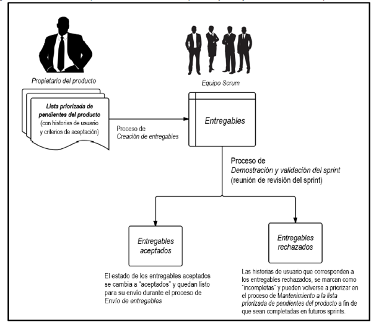

Es la capacidad que tiene un producto terminado o los entregables de cumplir con los criterios de aceptación y lograr el valor del negocio que espera el cliente.
Para asegurar que un proyecto cumpla con los requisitos de calidad, Scrum adopta un enfoque de mejora continua donde el equipo aprende de sus experiencias y de la participación de los socios para mantener actualizada la lista priorizada de pendientes del producto con cualquier cambio en los requerimientos.
Dicha lista nunca está completa hasta el cierre del proyecto. Cualquier cambio en los requisitos refleja los cambios en el entorno empresarial interno y externo y permite que el equipo funcione continuamente y se adapte para alcanzar esos requisitos. Scrum requiere que el trabajo se realice en incrementos durante los sprints, lo cual significa que los errores o defectos se detectan durante las pruebas de calidad repetitivas y no cuando el producto final o servicio está casi terminado.
En scrum la calidad debe estar ligada al alcance, el alcance de un proyecto es la suma total de todos los incrementos del producto, así como el trabajo necesario para el desarrollo del producto final. La calidad es la capacidad que tienen los entregables para cumplir con los requisitos de calidad del producto y satisfacer las necesidades del cliente. El alcance y la calidad del proyecto se encuentran en la lista priorizada de pendientes el producto.
El propietario del producto se asegura de que cualquier historia de usuario que se espera que realice el equipo Scrum en un sprint sea refinada antes del inicio del sprint. En general, los requerimientos más importantes en la resolución de los problemas del cliente o en el cumplimiento de sus necesidades, se consideran de alta prioridad, mientras que al resto se les da menor prioridad.
Otro factor al que esta ligada la calidad es al valor del negocio, es fundamental entender la calidad y el alcance de un proyecto a fin de trazar correctamente los resultados y beneficios que debe lograr tanto el proyecto como su producto para ofrecer valor empresarial. Para determinar el valor empresarial de un producto, es importante entender la necesidad del negocio que impulsa los requisitos del mismo. Por lo tanto, la necesidad del negocio determina cuál es el producto requerido, y este, a su vez, proporciona el valor empresarial esperado.
Criterios de aceptación
La lista priorizada de pendientes es el documento de requisitos donde se define el alcance del proyecto y como su nombre lo indica se prioriza en una lista las características finales del producto. Dichas características se describen en las historias de usuario, las cuales se elaboran de la mano con los socios involucrados en el producto, dentro de las historias de usuario se resaltan los criterios de aceptación que son los componentes mediante los cuales se determina la funcionalidad correcta o incorrecta de la historia de usuario y por medio de esta de la funcionalidad que describe.
Los criterios de aceptación los coloca el propietario del producto y estos deben satisfacer la funcionalidad que especifica la historia de usuario, en lo posible velando por que sean entregas eficaces y oportunas ya que esto determina el éxito del proyecto, de igual manera es el propietario del producto quien "califica" el cumplimiento de los criterios de aceptación, al final de cada sprint ,mediante los entregables completados y decide si se aceptan o rechazan, si se aceptan los entregables entonces la historia de usuario se considera terminada, de lo contrario se agregan de nuevo a la lista priorizada de pendientes del producto para que se completen en futuros sprints.
Por otra parte existen los criterios mínimos de aceptación que son los mas mínimo y obligatorio que debe tener una historia de usuario para su aceptación, cabe aclarar que no se puede aceptar una historia de usuario como terminada únicamente porque cumple con los criterios mínimos de aceptación algunas de sus funcionalidades no son cubiertas aun.

Criterios de terminado
Son una serie de reglas aplicables a todas las historias de usuario en un determinado sprint, Al igual que con los criterios de aceptación, se deben cumplir todas las condiciones de los criterios de terminado para que la historia de usuario se considere terminada.
El equipo Scrum debe utilizar una lista de verificación de los criterios de terminado generales para garantizar que una tarea está terminada y de que el resultado cumpla con la con la definición de terminado.
La definición de terminado típicamente la determina y la documenta el cuerpo de asesoramiento de Scrum.